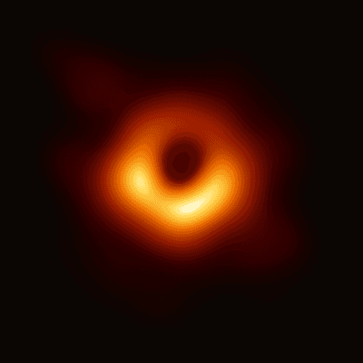

¡Mas Alla del Sistema Solar! Esta galaxia espiral es similar a la Vía Láctea pero más grande, con un diámetro de aproximadamente 220.000 años luz. Se puede ver a simple vista desde la Tierra en el hemisferio norte y es uno de los objetivos más lejanos que pueden observarse sin telescopio.
Agujero Negro

¡Nada Escapa de el! Un agujero negro es un objeto extremadamente denso en el espacio del cual no puede escapar ningún tipo de luz, comprimiendo una gran cantidad de masaa una singularidad. La gravedad que produce un agujero negro es tan poderosa que podrá atraer material cercano y “comérselo”.
Eclipse Solar
¡Los astros se alinean!Es un fenómeno celeste que causa admiración y cambia drásticamente el aspecto de los dos objetos más grandes que vemos en el nuestro cielo: el Sol y la Luna.
Asteroide
Un asteroide es un cuerpo rocoso y metálico que orbita el Sol, generalmente ubicado en el cinturón de asteroides entre Marte y Júpiter. Varían en tamaño, desde metros hasta cientos de kilómetros, y algunos pueden cruzar la órbita terrestre.